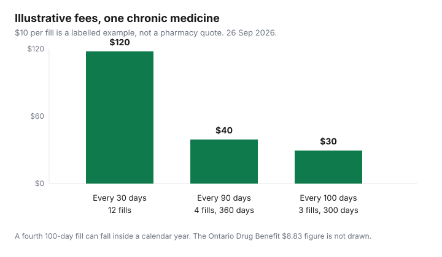

Healthcare · Canada
Pharmacy Dispensing Fees in Canada: How to Compare Costco, Walmart and Drugstore Prescription Prices
A prescription receipt is three lines, not one. The drug cost is the ingredient. The markup is a percentage or a flat add-on on that ingredient. The dispensing fee is what the pharmacy charges to prepare, check, and hand you the supply. Cash payers pay all three. People on a capped plan often pay only the slice of the fee the booklet will not reimburse, and they notice it only after a year of refills. This page is a phone method for Canadian counters. It is education, not medical advice and not a direction to change a dose or a pharmacy. Confirm the quote with the pharmacist, and confirm the cap with the plan administrator.
Key takeaways
- Ask for drug cost, markup, dispensing fee, and total. A single “cash price” hides the line a plan cap actually uses.
- Blog figures for Costco, Walmart, and Shoppers dispensing fees were not on an official page opened 26 Sep 2026. They are not in the table.
- Ontario’s Drug Benefit conditions page, updated 20 January 2026, describes a 100-day maximum quantity for most recipients and, for listed chronic-use drugs, at most five dispensing fees in 365 days. That is a public-plan rule, not a cash-counter price.
- The ministry notice effective 18 November 2024 names a regular Ontario Drug Benefit dispensing fee of $8.83, and rural fees of $9.93, $12.14, or $13.25. Those are plan fees in that notice, not what a warehouse charges you.
- A longer fill saves fees only when both the pharmacy and the payer allow it. The chart uses an illustrative $10 fee so the arithmetic is visible without pretending a retailer published it.
What you really pay: drug cost, markup and dispensing fee
Write the receipt in three columns before you compare two logos. The drug cost is tied to the drug identification number, the strength, and the quantity. A generic and a brand with the same strength are not the same ingredient cost. How substitution works in Canada is the generic and brand guide. Do not mix that question with the fee. You can pay a low fee on an expensive brand, or a high fee on a cheap generic. The total is what leaves your account. The fee is what a cap usually bites.
Markup is the middle line. Pharmacies do not all use the same markup, and a public plan does not pay a cash pharmacy’s usual markup. Under the Ontario Drug Benefit Act, the amount the executive officer pays for a listed product is built from the drug benefit price, a markup, and a dispensing fee, minus the co-payment the rules allow. That structure is why a senior’s co-payment and a cash payer’s total are different numbers. The Ontario prescription-drug coverage page, updated 2 July 2026, says most seniors pay the first $100 of prescription costs in the program year (1 August to 31 July) and then up to $6.11 per prescription, unless they are in the Seniors Co-Payment Program, which drops the deductible and reduces the co-payment to up to $2. Those co-payments are not dispensing-fee quotes for people who pay cash.
The fee itself, on the public plan, is capped by regulation at the lesser of the prescribed fee and the fee the pharmacy sets. The Executive Officer notice effective 18 November 2024, opened 26 Sep 2026, refers to pharmacies with a regular Ontario Drug Benefit dispensing fee of $8.83, and to rural fees of $9.93, $12.14, or $13.25 under the table in section 13(4) of Ontario Regulation 201/96. The conditions page updated 20 January 2026 explains when a fee is payable. It does not restate those dollar amounts. Use the notice for the dollars, and treat them as the public plan’s fee language, not as Walmart’s or Costco’s cash fee. No official page opened for this draft printed a current cash dispensing fee for Costco, Walmart, or a drugstore banner. Third-party leads in that neighbourhood were dropped.
Why Costco pharmacy is often cheaper, and that you don't need a membership to use it
The heading is the reason people drive across a parking lot. The pages that actually opened do not prove a cheaper fee, and they do not prove a membership rule. Costco.ca pharmacy services, opened 26 Sep 2026, describes home delivery of prescriptions ordered at Costcopharmacy.ca, with shipping stated as free and delivery in two to five business days by Canada Post Expedited Parcel. It tells you to visit Costcopharmacy.ca for the provinces that participate. It does not print a dispensing fee, and it does not print the words “membership not required.”
The Prescriptions by Mail page on costcopharmacy.ca says any person residing in British Columbia, Manitoba, New Brunswick, Newfoundland and Labrador, Nova Scotia, Ontario, or Saskatchewan, with a legitimate prescription written by a Canadian licensed physician, can use that mail pharmacy. Alberta, Prince Edward Island, and the territories are not in that sentence. Quebec is a different sentence, on Costco’s Quebec members pharmacy note: Costco does not operate pharmacies or provide the services referred to in those pharmacy web pages in Quebec. Pharmacies in Costco’s Quebec locations are independently owned and operated by pharmacists. A membership bought to “get the pharmacy price” does not answer Quebec, and it does not answer a warehouse that has not quoted you.
A U.S. Costco customer-service page says a membership is not required to purchase prescriptions at U.S. warehouses or online. That page is not the Canadian rule, so it is not used as one. Before you pay for a Gold Star card only to stand at a Canadian pharmacy counter, ask that counter. The Costco membership guide is the warehouse arithmetic for groceries and household goods. It is not a pharmacy fee. If a points event at a drugstore is why you stay with that banner, price the fee first. The PC Optimum timing guide is where points math lives. Points do not cancel a fee the plan will not reimburse.
How to phone around for a full cash price (script included)
Call three pharmacies on the same day, in the province where you will fill. Use the same drug, strength, and quantity. Read this, then write what they say. Do not accept “we’re usually cheaper.”
Script: “I am comparing a cash price before I transfer anything. For [drug name and strength], quantity [number], in [province], please quote the drug cost, the markup, the dispensing fee, and the total. Is a 90-day or a 100-day supply available for this medication, and does the fee change? What is today’s date on this quote? I do not need it filled on this call.”
If they will not split the total, ask whether the dispensing fee is inside the number and what that fee is. If they ask for a membership, a loyalty card, or a plan number, note that the quote is not a pure cash price. A plan quote and a cash quote answer different questions. Get the cash quote first. Then ask them to adjudicate your plan so you can see the share that remains. The worksheet below is blank on purpose. Fill it from the call, not from a blog.
| Pharmacy | Drug and strength | Quantity | Drug cost | Markup | Dispensing fee | Total cash price | Date and province of the quote |
|---|---|---|---|---|---|---|---|
| Pharmacy 1 | |||||||
| Pharmacy 2 | |||||||
| Pharmacy 3 |
Your plan's dispensing-fee cap and why your share changes by pharmacy
Coinsurance does not apply to every dollar the pharmacy types in. The plan pays its stated share of what the booklet allows, on a drug the formulary covers, after the deductible, and only up to any maximum. A dispensing fee above the plan’s cap is a common leftover. The workplace drug-plan guide is the sequence: formulary, prior authorization, supply length, then the appeal. This section is only the fee line.
Your share of the fee is the pharmacy’s dispensing fee minus the cap, when the fee is higher, and zero when the fee is at or under the cap. If the plan pays a percentage of the fee up to the cap, apply that percentage to the allowed fee, not to the pharmacy’s full fee. Example, labelled as arithmetic rather than a booklet: a $12 fee and an $8 cap leave $4 with you before any percentage. An $8 fee and an $8 cap leave $0 from the cap itself. Coinsurance on the drug cost is a separate line. No insurer’s public cap was opened for this draft, so the second table does not name Sun Life, Canada Life, Manulife, or any other plan. Open your administrator’s page or the booklet and write the cap in the cell.
Two plans do not automatically pay the leftover twice. The coordination guide is the birthday rule and the explanation of benefits. A fee the first plan capped can sometimes be considered by the second plan, up to the second plan’s own cap. Ask the pharmacy to submit both cards in the right order, then read the adjudication. If you are in Ontario and drug costs are high relative to household income, the Trillium guide is the public program that can sit under a workplace plan. Trillium counts money you pay, not money the plan pays.
| Line | What to write | Formula |
|---|---|---|
| Plan cap | The dispensing fee your booklet will reimburse, and whether that figure is a maximum dollar or a percentage up to a maximum. | From the booklet. Not from this page. |
| Pharmacy fee | The dispensing fee from the phone quote, same day and same quantity. | From the pharmacist. |
| Your share of the fee | The amount above the cap, if any. | Pharmacy fee minus cap, or zero if the fee is not above the cap. If the plan pays a percentage, apply it to the allowed fee only. |
| Drug-cost share | Coinsurance or co-pay on the allowed ingredient cost, after deductible. | Separate from the fee share. Do not add the fee into the drug cost and then apply the booklet's coinsurance to the blend unless the booklet says to. |
Longer fills: 90-day and 100-day supplies for stable chronic medications
The fee is charged per fill, not per tablet. Twelve monthly fills cost twelve fees. Four fills of a 90-day supply cost four fees, if each fill is allowed. That arithmetic is why a stable blood-pressure or cholesterol medicine is the usual candidate, and why a new medicine or a controlled drug often is not. The pharmacist, not this page, decides whether a longer supply is appropriate. Do not ask for a 100-day supply of a drug your prescriber limited for safety.
Ontario’s conditions page for dispensing fees, updated 20 January 2026, says that as of 1 August 2018, for most Ontario Drug Benefit recipients, the maximum quantity the executive officer is required to pay is a supply for a 100-day course of treatment, and 30 days when the Trial Prescription Program applies. In most cases the executive officer pays at most two dispensing fees per 28 days. For chronic-use medications on the ministry’s chronic list, the dispenser may receive at most five dispensing fees per 365-day period, and the page encourages a 100-day supply so a fee is paid for each of those fills. Exemptions exist, including some residential settings, some drug classes, and cases where the person cannot manage the medication and agrees to a smaller quantity. Those are public-plan payment rules. A cash payer is not inside them. A workplace plan may still refuse 90 days. Submit the longer fill and read the response before you celebrate four saved fees.
The chart uses an illustrative fee of $10, chosen because no verified cash fee was opened. Twelve times $10 is $120. Four times $10 is $40, which is four 90-day fills covering 360 days. Three times $10 is $30, which is three 100-day fills covering 300 days. A fourth 100-day fill can land inside a calendar year depending on the start date, which would be another $10. Change the fee and the bars change. The $8.83 public-plan figure is not drawn, because it is not a cash fee.

When convenience, blister packs or delivery are worth paying for
A higher fee can be the right purchase when the alternative is a missed dose or a trip you cannot make. Ask for the charge for compliance packs or blister packs as its own line, separate from the dispensing fee. This draft did not open a dated fee for blister packs, so none is printed. If that charge is weekly, multiply it by the weeks you will use it and set it beside the fee gap from the phone worksheet. Use those two quotes. This page does not fill in either number.
Delivery is the same comparison. Costco.ca’s pharmacy services page says shipping is free on the home-delivery service it describes, with a stated window of two to five business days, for provinces that participate. A drugstore delivery fee, if the pharmacy charges one, belongs on the worksheet next to the dispensing fee. Free shipping does not mean a lower drug cost. Ask for the three receipt lines on the mailed supply as well.
Stay with the closer pharmacy when the medicine is new, when you need a conversation about side effects, or when the longer trip costs more than the fee gap. Switch the maintenance drug you have been stable on, after the prescriber and the pharmacist agree a transfer is appropriate, when the worksheet shows a fee or a drug cost you will pay twelve times. The plan’s maximum and the provincial program still apply after you move the prescription. Price the fill. Then decide what the convenience is worth.
Sources & date stamps
- Ontario, conditions for payment of a dispensing fee under the Ontario Drug Benefit program. Updated 20 January 2026. 100-day maximum quantity for most recipients as of 1 August 2018; 30 days for the Trial Prescription Program; generally two fees per 28 days; five fees per 365 days for listed chronic-use medications. Opened 26 Sep 2026.
- Ontario Ministry of Health, Executive Officer notice on funding for minor ailment services, effective 18 November 2024. Used here only for the dispensing-fee dollars it names: regular $8.83, and rural $9.93, $12.14, or $13.25, citing section 13(4) of O. Reg. 201/96. Not a cash retail fee. Opened 26 Sep 2026.
- Ontario, get coverage for prescription drugs. Updated 2 July 2026. Senior deductible $100 and co-payment up to $6.11; Seniors Co-Payment Program co-payment up to $2. Opened 26 Sep 2026.
- Costco.ca pharmacy services and costcopharmacy.ca Prescriptions by Mail, opened 26 Sep 2026. Free shipping and a two-to-five-business-day window on the home-delivery description; participating provinces listed on the mail page; Quebec pharmacies described as independently operated. No membership sentence and no dispensing fee on those pages.
- Dropped as unverified: third-party leads that Costco’s fee is about $4.49, Walmart’s about $9.97, and Shoppers’ about $12.99. No official page confirmed them. No insurer dispensing-fee cap was opened, so the cap table is a formula.
Frequently asked questions
Do I need a Costco membership to use the pharmacy?
The Canadian Costco pharmacy pages opened on 26 Sep 2026 do not print whether a membership is required. Prescriptions by Mail on costcopharmacy.ca lists British Columbia, Manitoba, New Brunswick, Newfoundland and Labrador, Nova Scotia, Ontario, and Saskatchewan, and it asks for a legitimate prescription from a Canadian licensed physician. Quebec is stated separately: Costco says it does not operate pharmacies there, and those counters are independently owned. Ask the warehouse before you buy a membership only to reach the counter.
What is a dispensing fee?
It is the professional fee for preparing and checking the prescription, separate from the drug cost and any markup. On an Ontario Drug Benefit claim, the ministry notice effective 18 November 2024 refers to a regular dispensing fee of $8.83, and to rural fees of $9.93, $12.14, or $13.25. That is what the public-plan notice uses. It is not a cash price at a retail counter, and this page did not open a dated Costco, Walmart, or drugstore cash fee to put in its place.
Why does my share change between pharmacies?
Workplace plans often reimburse a dispensing fee only up to a cap written in the booklet. If one pharmacy charges a fee above that cap and another charges a fee at or under it, the extra stays with you even when the coinsurance percentage looks the same. The drug cost and markup can differ too. Your booklet has the cap; this page has the formula, not a stand-in number.
Can I ask a pharmacy for a price before filling?
Yes. Ask for a cash quote before you transfer a prescription: drug and strength, quantity, drug cost, markup, dispensing fee, total, date, and province. A quote is not a fill, and it can change, so write the numbers in the worksheet on this page. If the pharmacy will only quote a single total, ask which part is the fee, because that is the line a plan cap usually touches.
Is a 90-day supply always cheaper?
No. Fewer fills mean fewer dispensing fees only when the pharmacy and your plan both allow the longer supply. For most Ontario Drug Benefit recipients, the conditions page updated 20 January 2026 describes a 100-day maximum quantity and a limit of five dispensing fees per 365 days for listed chronic-use medications, while a private plan may still pay only 30 days. If the longer fill is rejected, you have bought tablets the plan will not pay for.